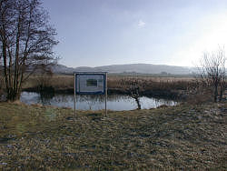

Bodenloses Loch
Useful Information
 |
| Image: Bodenloses Loch. |
| Location: | Unteroestheim |
| Open: |
no restrictions. [2007] |
| Fee: |
free. [2007] |
| Classification: |
 Karst Spring Karst Spring
|
| Light: | n/a |
| Dimension: | |
| Guided tours: | |
| Photography: | |
| Accessibility: | |
| Bibliography: | |
| Address: | |
| As far as we know this information was accurate when it was published (see years in brackets), but may have changed since then. Please check rates and details directly with the companies in question if you need more recent info. |
|
History
Description
|  |
| Image: Bodenloses Loch with explanatory sign. |
The Bodenloses Loch (Bottomless Pit) is obviously not bottomless, but it is rather deep. This is a result of the geologic situation. rather impermeable layers of sandstones and marls cover a layer of gypsum. The gipsum is soluble and so the groundwater karstified the the layer and formed crevices and caves, through which the water can flow easily. But the gypsum layer is completely dissolved in the area of the valley, towards the valley the gypsum layer becomes thinner and thinner until it vanishes. So the impermeable layers above and below the gypsum lie directly above one another. The water coming from the hills around has some pressure and so it forced its way up to the surface through weaknesses in the sandstones.

|
| Bodenloses Loch Gallery |
 Search Google for "Bodenloses Loch"
Search Google for "Bodenloses Loch" Google Earth Placemark
Google Earth Placemark Gipskarstquelle Bodenloses Loch - Internetangebot Bayerisches Landesamt für Umwelt
(
Gipskarstquelle Bodenloses Loch - Internetangebot Bayerisches Landesamt für Umwelt
( )
){kind=link}
{kind=link}
{kind=link}
{kind=link}